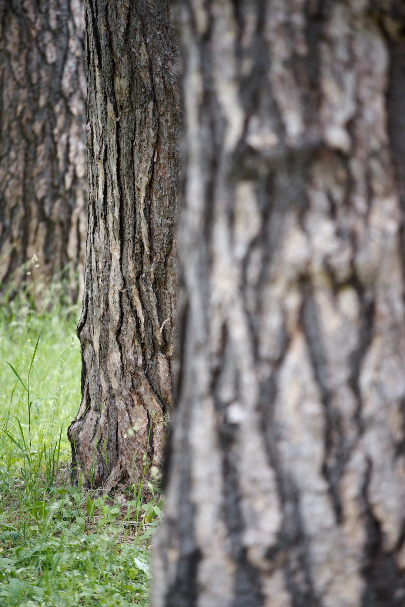

← Botanischer Garten Berlin

Taken
31 May 2026, 14:11
Camera
NIKON CORPORATION NIKON D750
Lens
AF-S Nikkor 70-200mm f/4G ED VR
Focal length
200 mm
Aperture
f/4
Shutter
1/320 s
ISO
400
Dimensions
1336 × 2000
Creator
Marc Altmann
Pinus nigra
Botanic Garden and Botanical Museum Berlin
← 20260531_0034
20260531_0052 →